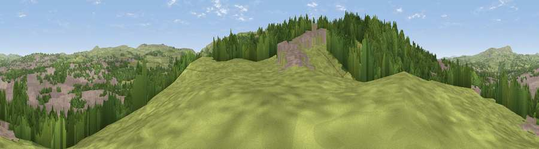

Viewpoint near Burnley
#27206 in England · top 60% of its area beats it · near BurnleyWhere it is
The exact computed spot (SD 84175 31475). Click the marker for map links.
The view, rendered

A 360° render of this exact spot computed from the terrain model, tree cover and land cover — summer colours, afternoon light, calibrated against photographs of famous viewpoints. Real trees, hedges and buildings will differ in detail.
The panorama
Grey silhouette: terrain skyline in each direction (720 bearings, Earth curvature and refraction included). Dashed green: skyline with trees (+15 m) and buildings (+8 m) as obstacles. Blue strip: how far the ground is visible on each bearing.
Where the view opens
Wedge length = distance to the farthest visible ground on that bearing (vegetation-aware). Rings at 10, 25 and 50 km.
What fills the view
40% grassland · 30% woodland · 30% built-up
Angular shares of the visible panorama (visual magnitude), not map area. Landscape diversity 0.48 (0–1 Shannon).
Key numbers
More beautiful places nearby
The staircase of upgrades: each row has a higher view potential than everything closer. Driving times are estimates from straight-line distance, calibrated against real road routing — check an actual route before setting out.
| Place | Direction | Drive | Score |
|---|---|---|---|
| Viewpoint near Burnley | SE · 0 km | ~1 min | 47.6 |
| Viewpoint near Walk Mill | SSW · 2 km | ~5 min | 64.1 |
| Black Hill | SW · 4 km | ~8 min | 64.8 |
| Viewpoint near Loveclough | SW · 4 km | ~9 min | 68.8 |
| Great Hameldon | WSW · 5 km | ~12 min | 74.2 |
| Pendle Hill | NNW · 11 km | ~20 min | 76.5 |
| Viewpoint near Edenfield | S · 13 km | ~24 min | 77.5 |
| Darwen Hill | WSW · 19 km | ~32 min | 80.7 |
53.77936, -2.24163 · source: screening · position refined by local search. Computed location — check access rights before visiting.